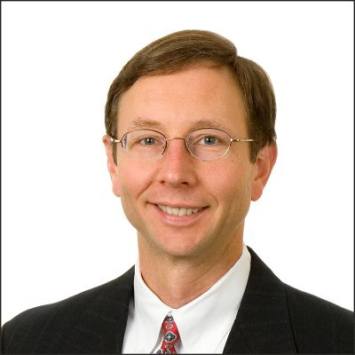

Edmund J. Walsh, Esq.

Open Source Legal Issues
Open source licensing is now a consideration for every software developer and for every software "buyer." But it is far from simple and monolithic. While some have built businesses around open source licensing, open source is incompatible with some business models. The benefits, as well as the limitations and risks, of open source licensing will be covered. Recent changes in the GPL, a widely used open source license, as well as possible trends towards litigation in the open source community will be covered. This presentation is targeted to engineers and executives who must understand the business implications and pitfalls of using open source.
Biography:
Ed Walsh is a shareholder and member of the Electrical & Computer Technologies Group at Wolf Greenfield, the largest law firm in New England devoted exclusively to intellectual property law. Electrical and computer-related clients benefit from Ed’s experience in IP strategy development and execution, including patent prosecution, clearances and counseling, IP portfolio management, litigation, licensing, consulting agreements, and joint development agreements. His areas of technical expertise include semiconductor processing and high-speed circuit design, software, networks and network management, connectors and interconnection technology, and many types of test equipment. Before coming to the firm, Ed had over 14 years experience serving as in-house counsel for technology companies, the most recent of which was as Chief Intellectual Property Counsel for Teradyne, Inc., a position he held for 10 years. Previous positions held by Ed include that of Division IP Counsel for Textron Specialty Materials and Patent Attorney for Raytheon. Prior to entering law school, he worked as an electrical engineer, developing operating system software and analyzing communications systems.
Ed received his undergraduate degree in Electrical Engineering from Boston University, a masters degree in Electrical Engineering from Stanford University, and his law degree from Suffolk University Law School. He served as both an Adjunct Professor and Lecturer in electrical engineering at Boston University, where he taught classes in circuit theory and dynamic systems theory. He was a Fellow of the National Science Foundation and has also been a faculty member for both the Massachusetts Continuing Legal Education IP Program and Suffolk University Law School’s Advanced Legal Studies Program. Ed taught a Suffolk Advanced Legal Studies course entitled Maximizing Business Value From IP, was a guest lecturer at Boston University School of Management for a class on IP strategy, and has presented and written extensively on open source software.
 IT
Professional Conference
IT
Professional Conference
 Seminars
Networking Session
Demonstrations
Seminars
Networking Session
Demonstrations